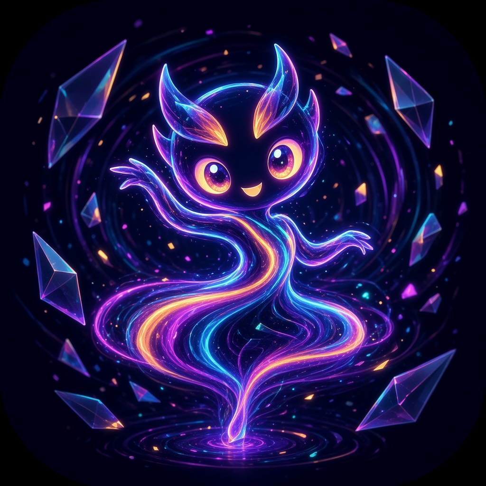

State: idle
Task: —
Background: no
Frame rate: —
State
Working task
Passes { background: true } to setState(), as the runtime does for read-only proactive research.
Voice level (talking)
The slider feeds setAudioLevel(). The microphone option measures your real input level.
Icon size (48px)
The first icon mirrors the large avatar; the others each hold a fixed state.
Theme
Sets the theme attribute on every avatar. Light draws deep inks with soft shadows on a transparent background, for cream pages.
Options
The component also follows the operating system's prefers-reduced-motion setting.

Approved mascot artwork, kept for on-model comparison.